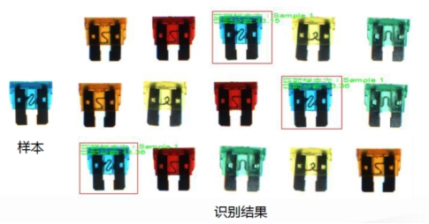
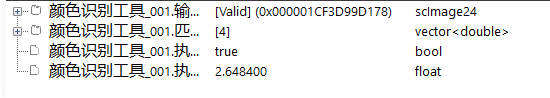
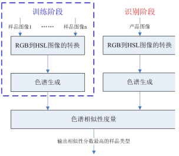
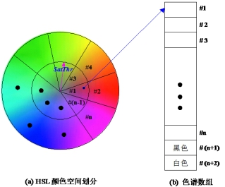
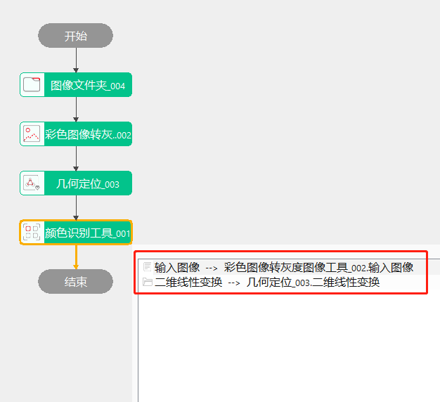
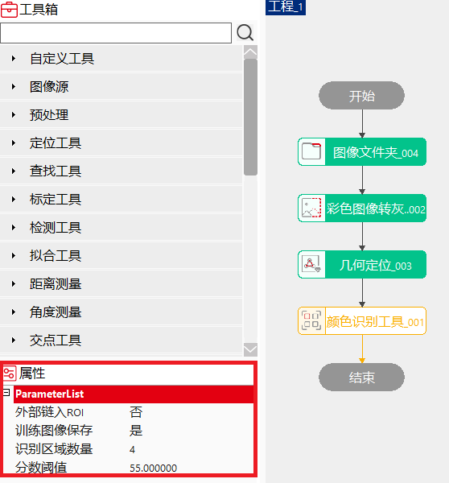
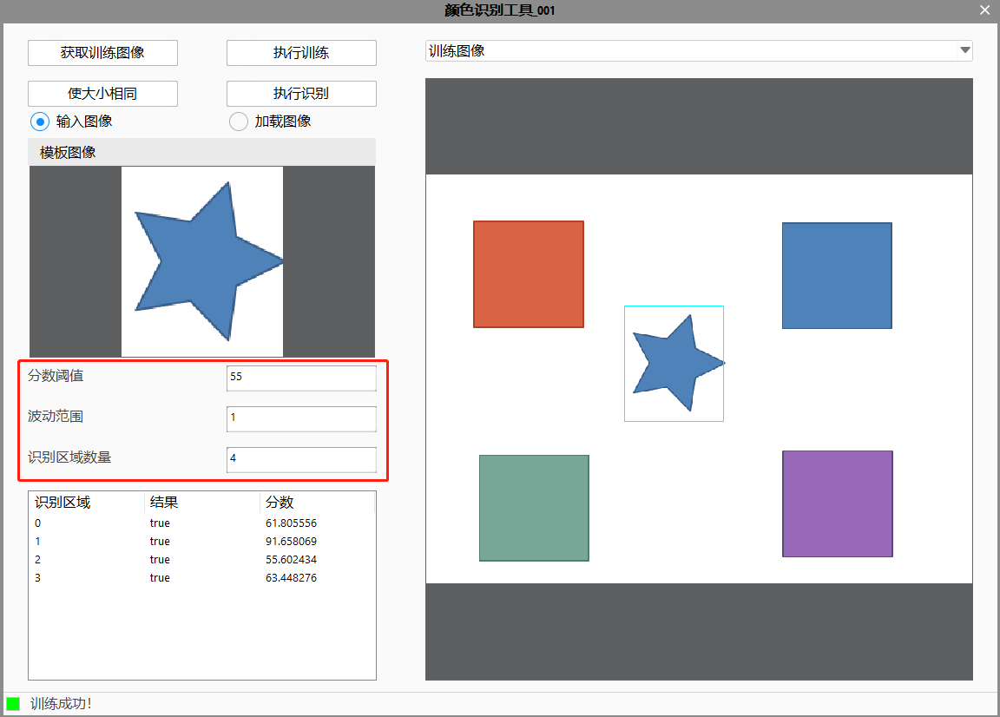
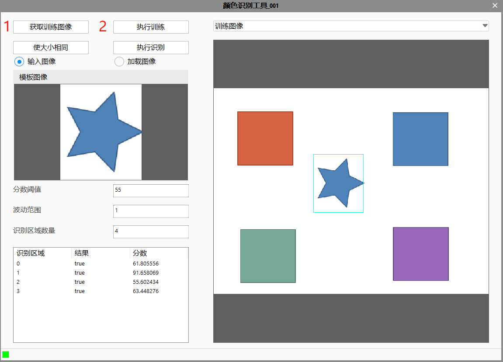
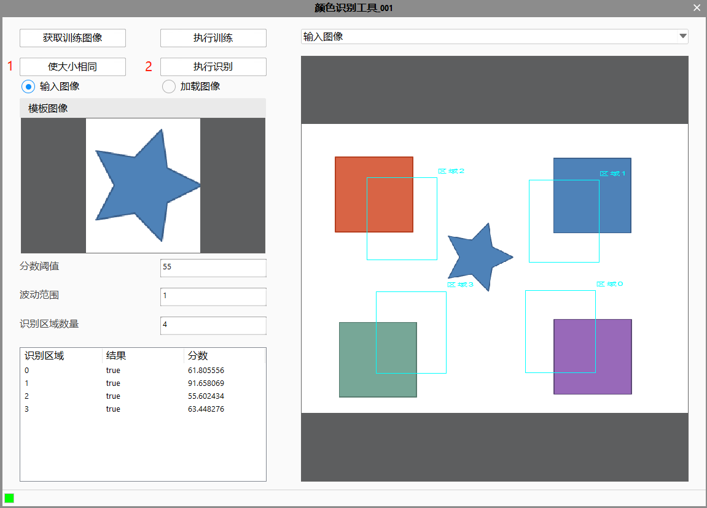

颜色识别工具主要对标准样品以及待分类产品的图像进行对比分析，并根据产品图像与样品图像之间的颜色相似性对产品进行分类。


根据图像颜色对产品分类
鉴于灰度图像提供的信息量较小，RGB彩色图像不符合人的视觉习惯，颜色识别工具采用HSL颜色空间图像进行颜色识别。HSL颜色空间是人类视觉空间体系中的一种，反映了人类感知和体验颜色的方式，是最适合进行颜色识别的颜色空间。

如图3所示为颜色识别工具流程示意图。在HSL颜色空间进行颜色识别的关键有两点：1）HSL图像的色谱生成：对HSL颜色空间图像进行降维处理，将图像的三维空间颜色特征降维为一维颜色特征，能有效的减小识别的运算量，方便识别算法的实现；2）色谱的相似性度量：采用曼哈顿距离度量不同色谱之间的相似程度。如图4所示为色谱的示意图。

工具执行流程：配置输入→设定属性→训练图像→执行识别。
双击工具在弹出窗口中配置输入图像，二维线性变换；

属性栏设置如图6，右键工具→属性→打开高级界面设置如图7


先点击“获取训练图像”，再点击“执行训练”；

先点击“使大小相同”来设置识别区域，再点击“执行识别”；

粗略模式将色谱划分为16个区域；一般模式将色谱划分为30个区域；精细模式将色谱划分为58个区域。颜色灵敏度决定着颜色识别工具的精度，从粗略模式、一般模式到精细模式精度依次提高，但速度依次下降。
无
| 参数名称 | 参数说明 |
|---|---|
| 外部链入ROI | ROI区域通过外部链入指定的区域。 |
| ROI区域类型 | 工具执行检测的区域类型，分为四种：仿射矩形ROI，圆形ROI，圆环ROI，椭圆ROI |
| 训练图像是否保存 | 保存训练图像。 |
| 识别区域数量 | 颜色识别的区域内识别数量。 |
| 分数阈值 | 根据分数阈值设置是否匹配成功。范围是(0,100]，默认是80。 |
| 输入图像 | 需要进行颜色识别的图像。 |
| 二维线性变换 | 对图像进行基础变换的矩阵，一般不做设置。 |
| 参数名称 | 参数说明 |
|---|---|
| 输入图像 | 输入图像宽度、高度、像素大小。 |
| 匹配分数 | 一个或者多个待测区域的匹配分数。 |
| 执行结果 | 工具执行结果。 |
| 执行时间 | 工具执行时间。 |
参见“\Samples\颜色识别工具.gvp”。